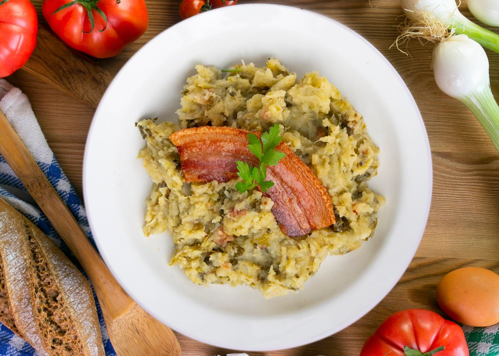

Trinxat de la Cerdanya

És una recepta tradicional de Catalunya que ha alimentat a generacions durant els llargs hiverns en els Pirineus Catalans, especialment a la comarca de la Cerdanya
Samfaina
És una recepta fonamental de la cuina catalana que ha alimentat generacions a tot el territori, aprofitant la riquesa de les hortalisses de l'horta per crear un guisat lent i aromàtic que és l'ànima de molts plats tradicionals.
Esqueixada
Protagonista indiscutible dels estius a casa nostra, aquest plat combina la textura del bacallà esqueixat a mà amb la vivacitat dels productes frescos de l'horta per oferir una mossegada refrescant i plena de caràcter mediterrani.
Fideuà
Nascuda a la vora del mar de la ma dels pescadors, aquesta variant marinera substitueix l'arròs per fideus per absorbir tota la intensitat d'un bon sofregit i el millor peix frescos de la nostra costa.
Escudella
Considerada el plat de cullera per excel·lència, aquesta elaboració recull tota la substància de la terra i el bestiar en un brou reconfortant que, des de fa segles, presideix les taules catalanes durant els mesos més freds de l'any.